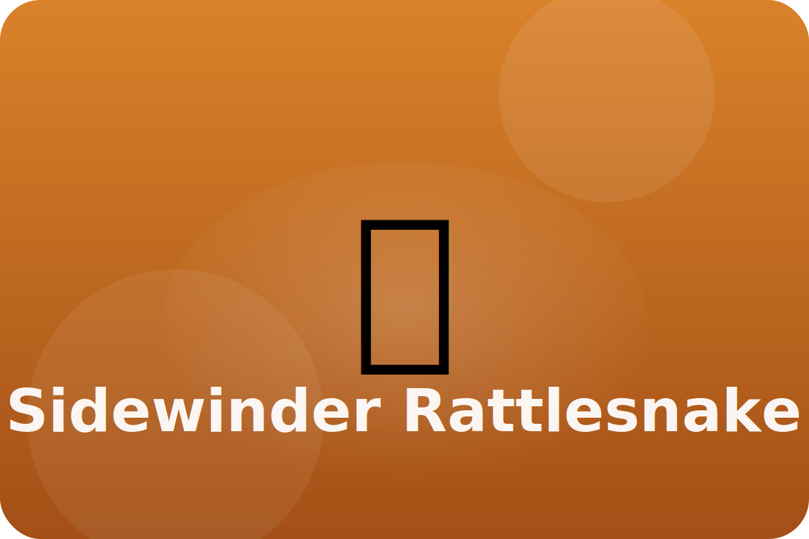

Desert
Moving across hot sand
Sidewinders move in a sideways S-shape. Only part of their body touches the sand at once, keeping them cool.
Sidewinding Steps
A special slithering pattern keeps the snake from sinking into loose sand.
Heat Sensors
Pits on its face sense the body heat of small animals hiding under sand.
Camouflage Scales
Sandy colored scales help the snake disappear against the desert floor.
Keep exploring the Sidewinder Rattlesnake
Watch the Sidewinder Rattlesnake in action
Rattlesnakes for Kids